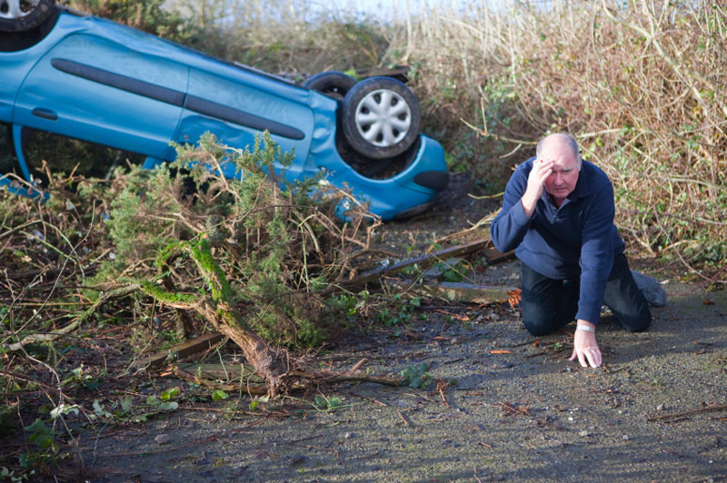
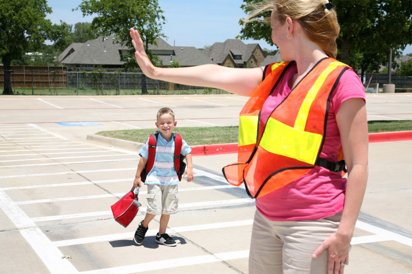
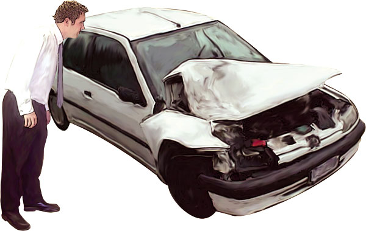
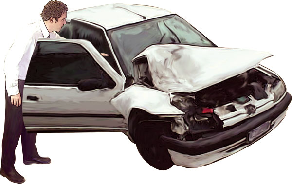
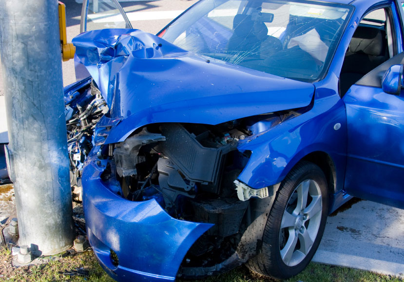
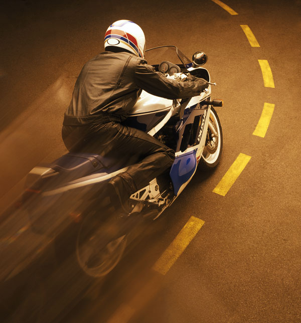

Road Traffic Accidents
Most modern vehicles are designed to withstand impacts of a certain force, and to provide protection to drivers and passengers. Seat belts, 'crumple zones', collapsible steering wheels, airbags, roll bars – all these and similar devices are designed to provide personal protection in an accident. Unfortunately, not all vehicles on Australian roads are equipped with these modern design benefits, and many provide little or no protection at all.
As a first aid provider, you may be required to render assistance at the scene of a road traffic accident. If so, remember, be calm and methodical in your actions as others involved who have not had the benefit of first aid training will look to you for support and guidance – for leadership.
Approaching the scene
Consider your safety and that of bystanders and the casualty. Always take time to have a good look at the scene before you approach. Approach the scene methodically, keep away from traffic, and ask someone to accompany you as an assistant.
Examine the scene – give yourself time to think about your next action.
There are many things to consider, including:
 Is the vehicle stable; will it roll or move?
Is the vehicle stable; will it roll or move?
 Is there spilt fuel?
Is there spilt fuel?
 Is there any risk of fire?
Is there any risk of fire?
 Are power poles involved?
Are power poles involved?
 What about oncoming traffic?
What about oncoming traffic?
 If a van or truck; is the load safe?
If a van or truck; is the load safe?
 DO NOT touch anything until you are sure that it is safe.
DO NOT touch anything until you are sure that it is safe.
Controlling the scene
As you move to the scene, ask bystanders to move back. Ask a responsible person to slow down or redirect any oncoming traffic (ask if anyone has a torch). Ask someone else to make sure that bystanders (especially children) don't become involved with passing traffic. Ask bystanders not to smoke near any damaged vehicles.
Unless there is someone else present with more advanced medical knowledge, you become the person in charge of the casualties.
Assess the scene
What are your initial impressions.
 How many casualties?
How many casualties?
 Are they walking around?
Are they walking around?
 Unconscious?
Unconscious?
 Talking?
Talking?
 Any obviously dead?
Any obviously dead?
 Any trapped?
Any trapped?
 Immobile?
Immobile?
After the initial quick assessment, ask the person who accompanied you to contact the ambulance service and give them information on location, number of casualties, estimated seriousness of injuries, and if road rescue is required for trapped casualties.
Ask bystanders for help; 'Are there any first aiders here?', 'Did anyone see what happened?' 'Could someone give me a hand?' It is at this point that you may be required to triage the casualties (refer to Triage) - remember, first aid is provided to the casualties who will benefit most, eg the unconscious, the person bleeding profusely.
Without adequate help, do not become committed to resuscitating a cardiac arrest victim at the expense of others who require urgent assistance.
Access to the casualties
Ensure that any vehicle involved is safe. Do not touch the vehicle unless you are certain it is safe to do so. Check the vehicle is not in contact with an electrical power source.
If you attempt to gain entry, do not wrench open the door unless you know that it is not in contact with a casualty. In certain circumstances, casualties have become impaled or entrapped by contact with a door. Be careful of broken glass if you insert your head through a window. Make sure that you can gain effective entry beside and behind the casualty. Beware of sharp metal and broken glass.
Attending the casualties
Perform a primary examination of the casualties. This will tend to confirm your initial triage. Use any helpers to move the casualties with minor injuries ('walking wounded') away from the scene to a safe place. This will give you more room to attend to the more serious cases.
Always try to have a responsible person to help you attend to serious casualties – it helps to have assistance and support.
What to look for
Always consider the outcomes of the accident: Was the vehicle struck on the side ('T-boned')? Did it roll over? Was it a high-speed impact? Was the motorcyclist hit by his own bike? There are certain injuries that appear associated with particular types of impact ('mechanism of injury'), and considering the accident's effects may point you towards any suspected, but perhaps less visible, injuries:
Side impact. Fractured upper leg (femur) and/or lower leg on the side of impact. Consider a fractured pelvis. Suspect a shoulder or upper arm injury on the side of impact, and if the 'B' pillar has been damaged, suspect a head injury.
High speed impact. Deceleration injuries involving severe internal bleeding, multiple fractures, impacted pelvis, head and spinal injuries, and multiple lacerations. Be alert for deterioration in unconscious casualties with head injuries.
Rear end collisions. Cervical spine injuries ('whiplash' effect) and facial injuries.
Ejection from the vehicle. Head and spinal injuries, unconsciousness, multiple fractures, multiple lacerations to upper body and head, and internal bleeding.
Roll over. This mechanism of injury provides for the complete range of damage to the human body. Drivers and passengers are usually thrown around, irrespective of their seat belt restraints, and they have no control over their movements.
Pay particular attention to children, as they are often not correctly restrained by seatbelts designed for adults.
Motorcycle accidents. Injuries commonly sustained by riders and pillion passengers are fractures of the femur, wrist and ankle fractures, head injuries, and deceleration injuries resulting in severe internal bleeding.
Motor cyclists' helmets MUST NOT be removed unless the airway is obstructed or the casualty is not breathing.
Casualties should remove their own helmets wherever possible. If a helmet has to be removed, it requires two rescuers to do so, and it should be done carefully with no movement of the neck.
Bicycle accidents. Cyclists are liable to sustain multiple fractures, multiple lacerations, and head injuries. Children are susceptible to 'greenstick' fractures of the arms, and wrist injuries through falling off at relatively low speed.
Pedestrians. Generally, adults are struck on their side as they try to turn away from the vehicle. Their injuries are usually more pronounced on the side that has received the impact.
Children and the elderly are more likely to be struck as they turn to face the oncoming vehicle.
Most pedestrians are 'run under' rather than 'run over' as they are forced off their feet by the impact and may be thrown over the vehicle, or for some distance from the point of impact. Head and spinal injuries are common, especially where the casualty's head has struck the vehicle's bonnet or windscreen. Small children may be 'run over', and be still under the vehicle when it stops.
Treatment of casualties
Treat any casualties in accordance with your training. DO NOT remove any seriously injured casualties from the vehicle unless fire, fear of further collision, airway protection, control of severe bleeding, or CPR are necessary.
Wait for the ambulance to arrive. Provide what treatment and reassurance you can, keep the casualties warm with blankets if available, and periodically check on the 'walking wounded' who have been moved from the scene.
Remember that shock is a life-threatening condition, and may be present after trauma sustained in a road traffic accident. Be ready to treat any signs and symptoms that indicate a casualty is progressing into shock.
Do not confuse shock with the adrenaline 'rush' associated with the 'fight or flight' mechanism which causes people involved to shiver, shake, cry and feel faint after an accident. This is not a serious condition, and others can look after them while you attend to the needy casualties.
On arrival of the ambulance, give the crew what information you have and advise them of any treatment you have provided. Your intervention will be appreciated by all concerned – especially the casualties.